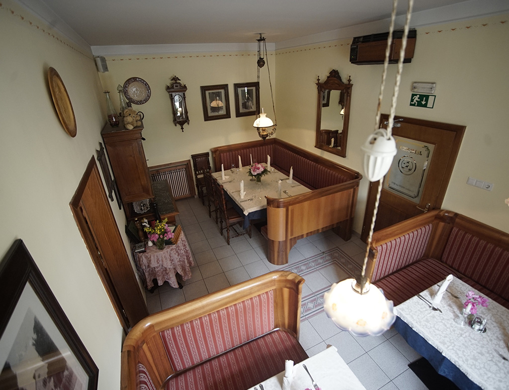
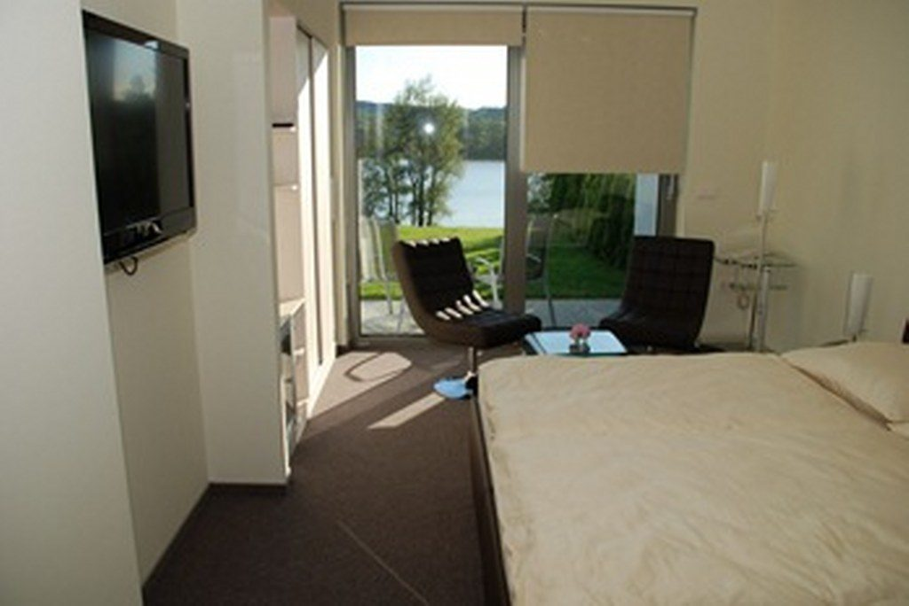
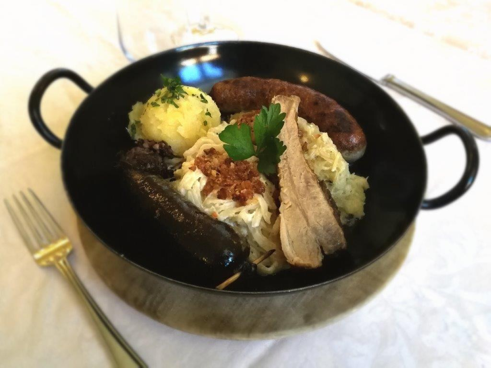
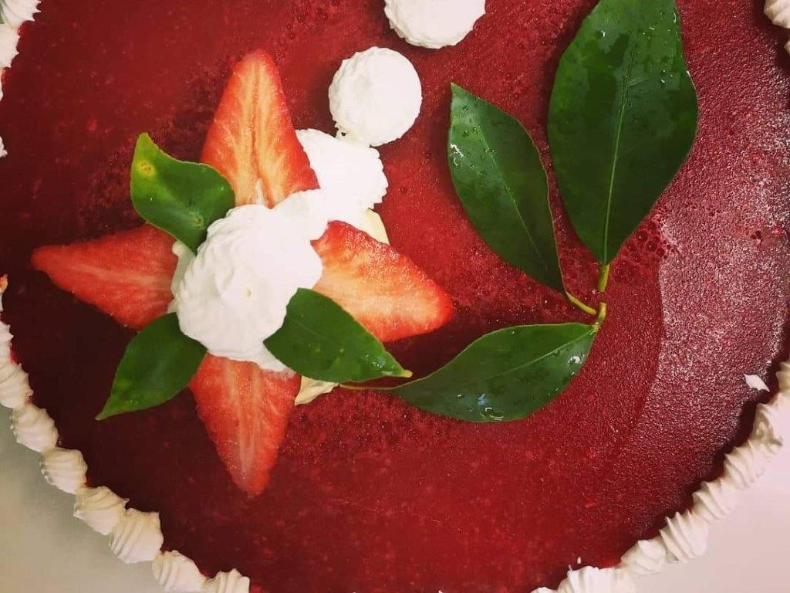
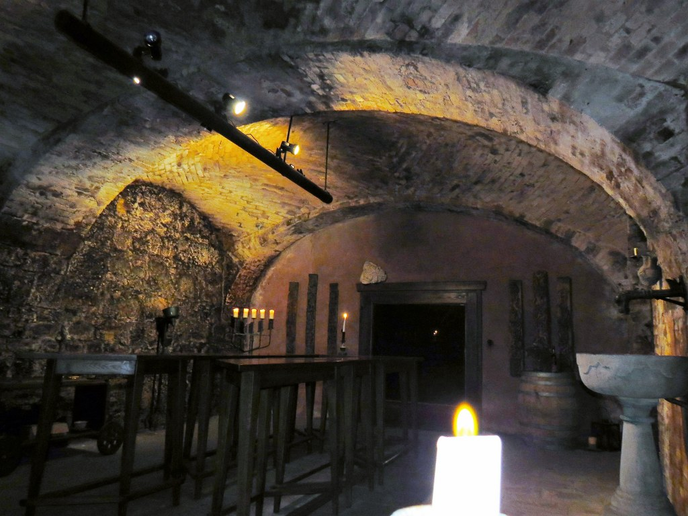
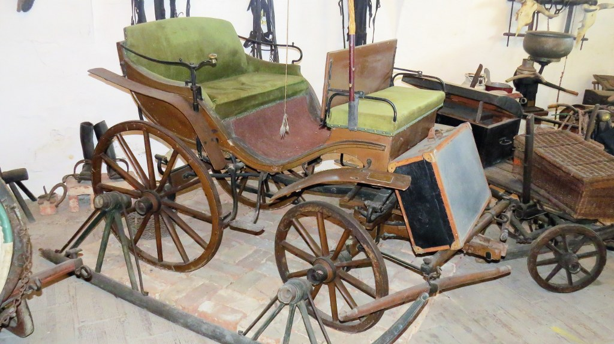
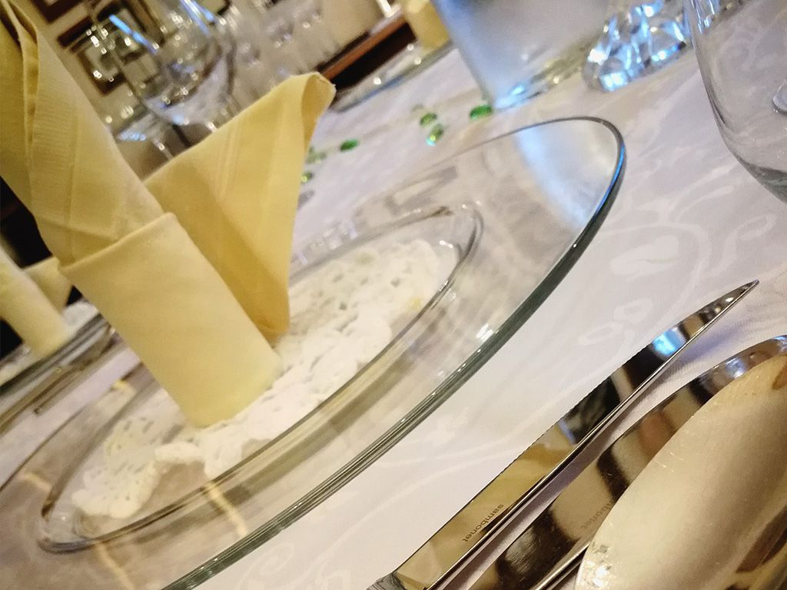

Gostilna od leta 1870 in hotel ob jezeru Pristava
Sezonska kulinarika šeste generacije družine Šiker, Šarlota po receptu babice Brede in deset sob s pogledom na jezero, sto korakov od gostilne.

Gostilna in hotel
Gostilna je zunaj kmečka in starožitna, znotraj sodobna. Hotel, odprt konec leta 2011, stoji sto korakov stran, v naravi ob jezeru.

Gostilna Šiker
Jedilnice, posebna družinska soba, 200 let stara klet s sodi in buteljkami, letni vrt in igrala za otroke. Poslovna kosila v Šikerjevi sobi, kjer vlada mir.
- Pečena račka od leta 1982, okoli Martinovega tudi gos
- Šikerjeve klasike iz 60. in 70. let
- Sezonski jedilnik: gobe, kostanj, šparglji, akacija, češnje

Hotel Šiker
Deset individualno opremljenih sob, večina s pogledom na jezero. Talno in stensko ogrevanje in hlajenje, zato klimatske naprave ne motijo počutja. Sobe za dve in tri osebe.
- Zajtrk vključen, balkon ali terasa
- Wi-Fi, satelitska TV, minibar, sef
- Brezplačno: kolesa, igralnica, parkirišče
Kaj je na mizi
Nekatere jedi so res tradicionalne, vendar v sozvočju s časom. Nekatere sta pričela pripravljati dedek Jože in babica Silva, druge mama Breda.

Pečena račka
Od leta 1982. S sladkim rdečim zeljem, mlinci in pečenim jabolkom ali hruško.

Bograč
Klasika hiše v bakrenem kotličku.

Polnjena telečja prsa
Klasika iz 60. in 70. let.

Sezonsko
Dobrote v času kolin, gobe, kostanj, čemaž, šparglji, gozdni sadeži.
Gault&Millau 2026: Chef's Restaurant. Kuhinja: Home cooking | Local | Traditional.
Vir: si.gaultmillau.com, vpis Gostilna Šiker, ocena 2026.
Šarlota po receptu babice Brede
Pripravljajo jo že več kot petdeset let. Breda je pri petnajstih letih kot dijakinja naredila svojo prvo »našo« šarloto. Majhna, velika ali kot torta, vedno razveseljuje srca in brbončice. Lahko jo odnesete tudi domov kot sladko darilo.
Poleg šarlote babica Breda po receptih prednikov pripravlja marmelade, smrekove vršičke, sadje v žganju in sokove iz mete, bezga in malin.
Naročilo šarlote
Klet, muzej, praznovanja

Vinska klet
Aperitiv pod 200 let starimi oboki. Po predhodni najavi pokušnje vin lokalnih vinarjev; v kleti tudi literarni večeri in predstave.

Kmečki muzej
Prek ceste, v nekdanjem hlevu: več kot petsto eksponatov iz kmečkega življenja Slovenskih goric. Voden ogled po najavi.

Skupine in poslovna kosila
Krsti, poroke, rojstni dnevi, obhajila, birme, obletnice mature. Poslovna kosila v posebni Šikerjevi sobi.
Šest generacij družine Šiker
Leta 1870 sta Mihael in Ana Schiker ob furmanski cesti med Radgono in Mariborom postavila gostilno. V hlevu prek ceste, kjer je danes Kmečki muzej, si je živina odpočila, furmani pa so se odžejali z žganjem, jabolčnikom, vinom in studenčnico.
1870
konec 19. stoletja
do druge svetovne vojne
temelj današnje gostilne
klet, muzej, igrišče
hotel od konca 2011
Rezervacije in informacije
Rezervacijo tri dni ali manj pred prihodom sprejemajo samo po telefonu. Rezervacija velja, ko jo gostilna potrdi.
Gostilna Šiker
- Sreda do sobota11.00 do 21.00
- Nedelja in prazniki11.00 do 17.00
- Ponedeljek in torekzaprto
Kuhinja se zapre uro pred zaprtjem. Pozimi (1. 1. do 15. 3.) sreda do sobota do 19.00. Po siker.si, preverjeno 21. 11. 2026.
Hotel Šiker
- Recepcija, vsak dan5.00 do 15.00
- Prijavaod 15. ure
- Odjavado 11. ure
Ob odsotnosti z recepcije pokličite z domofonom na vhodu.